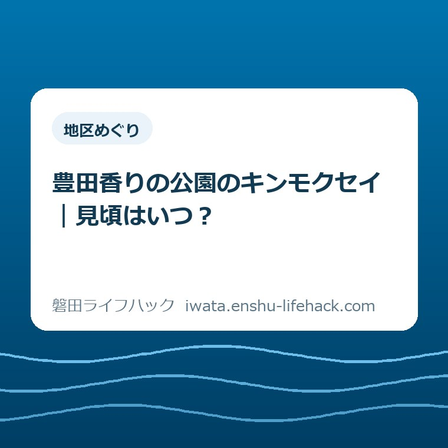
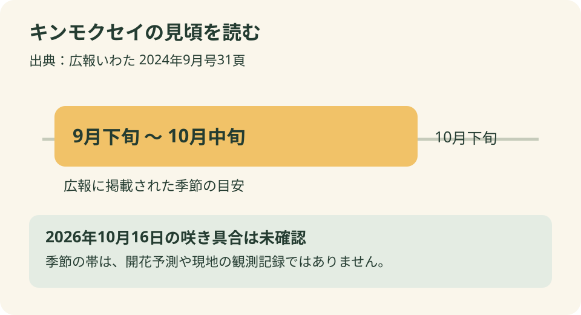
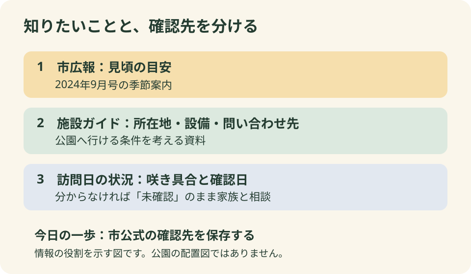

地区めぐり
豊田香りの公園のキンモクセイ｜見頃はいつ？

この記事の要点
Q. 豊田香りの公園のキンモクセイは、いつが見頃？
A. 豊田香りの公園のキンモクセイは、市の2024年9月広報では9月下旬～10月中旬が見頃と紹介されています。これは季節の目安で、2026年10月16日の開花を確認した情報ではありません。花を目当てに出かける前に、市公式施設ガイドの確認先を確かめてください。
見頃は9月下旬～10月中旬。ただし資料の日付も一緒に
花を見に行く短い外出でも、家族の準備は短いとは限りません。洗濯や買い物の順番を変え、子どもの支度をして、帰宅後の用事も考える。仕事のない時間を見つけるだけで一苦労、というご家庭もあると思います。見頃を調べるのは、その手間を無駄にしたくないからです。
豊田香りの公園のキンモクセイについて、まず答えられるのは季節の目安です。磐田市の『広報いわた』2024年9月号31頁では、見頃を9月下旬～10月中旬と紹介しています。この記事は2026年10月16日公開ですが、出典の年を2026年に読み替えてはいません。
同じ広報には、香りの博物館のすぐ東に公園があることも載っています。四季折々の香り豊かな植物が植えられ、秋にはキンモクセイの香りを楽しめるという紹介です。秋の散歩先を考える資料にはなります。ただし、発行当時の紹介と、訪ねる日の花の状態は別の情報です。
「見頃はいつ？」に対する答えと、「今日咲いている？」への答えは、同じではありません。本記事では、2026年10月16日の現地開花状況を確認できていません。満開とも、もう終わったとも書けません。日付を明示することを、外出の段取りを担う方への最低限の約束にします。

季節の案内と当日の情報を、混ぜずに読む
豊田香りの公園を調べる際は、資料が何を知らせるためのものかを分けると読みやすくなります。広報の花紹介は季節を知る入口です。施設ガイドは所在地や設備を調べる入口です。いずれも役立ちますが、その二つを足せば当日の開花が確定するわけではありません。
花の写真を見つけた場合も、最初に見るのは撮影日です。掲載日だけが新しくても、写真がその日に撮られたとは限りません。これは公園の現状を疑うという話ではなく、写真から読み取れる範囲を決めるためです。年や日付が分からない写真を、当日の様子として家族に送らないようにしたいところです。
市の施設ガイドの更新日は2025年3月3日です。この日付は施設案内が更新された日であり、キンモクセイの開花確認日ではありません。「更新」と「観察」の違いは、小さな文字の違いに見えます。しかし花を目的に移動する側には、予定を決められるかどうかの違いになります。
2026年10月16日は、広報で紹介された10月中旬という時期に当たります。ただ、それだけで「今週末が最盛期」と結論を出すことはできません。暦から言えるのは季節の案内に重なるということまでです。花が残っているか、どこで見られるかは、現地の情報が必要です。
私なら、家族へ送る短いメモにも出典の年を残します。「2024年の市広報では9月下旬～10月中旬。2026年の様子はまだ未確認」と書けば、読んだ人が予報と取り違えにくくなります。説明を長くするより、判断を変える日付を一つ添える方が役に立ちます。
豊田町駅から徒歩3分と、家を出てからの時間は別
豊田香りの公園は、磐田市の公式施設ガイドで豊田地区の施設として案内されています。所在地は磐田市立野2017-3。JR豊田町駅北口から徒歩3分と掲載されています。花の目安が分かったら、この場所が家族の普段の移動範囲に入るかを考える材料になります。
意外に感じる方もいるかもしれませんが、駅から徒歩3分という近さも公式案内で確認できます。車で遠くへ出かける日だけが、花に触れる機会ではありません。ただし、ここでの3分は駅北口からの案内です。自宅からの移動や列車を待つ時間まで含んだ数字ではありません。
小さな子どもを連れて歩くときや、途中で休みたい家族と出かけるときは、案内の徒歩時間をそのまま帰宅予定の計算に使わない方がよいと私は考えます。歩く速さを施設の数字に合わせる必要はありません。家族が無理なく動ける時間を先に確保して、その中に散歩を置く考え方です。
市の施設ガイドには駐車場があることも記載されています。一方、今回確認したページには、駐車台数や当日の空き状況は示されていません。「駐車場あり」は施設についての情報です。「到着したら必ず停められる」という約束として家族に伝えるのは避けます。
車と電車のどちらを選ぶかは、人数や荷物、自宅からの距離で変わります。本記事では一律に電車を勧めません。磐田市内の場所の感覚をつかみたい場合は、市内の五つの地域と暮らしの距離を整理した記事も参考になります。市内というだけで、各家庭から同じ近さになるわけではありません。
トイレについては、市の施設ガイドに多目的トイレの記載があります。車いす対応の出入り口などの表示もあります。ただ、設備があることと、個々の介助や休憩の条件がそろうことは別です。必要な設備が決まっているご家庭は、その条件に絞って確認すると判断しやすくなります。
公式案内の良い点と、注文したい点
市の案内の良い点は、季節を知る広報と、場所を知る施設ガイドがあることです。花の名前だけでなく、訪ねる公園を具体的に選べます。施設ガイドには駅からの案内やトイレ、問い合わせ先もあり、外出の条件を一つずつ整理できる土台があります。
特に、問い合わせ先が香りの博物館と分かることは助かります。検索を続けても答えが見つからないとき、どこへ聞けばよいかまで探し直さずに済むからです。公園の名前と博物館の名前が違っていても、公式案内に両者のつながりが示されている意味は小さくありません。
注文したい点は、季節の紹介に触れた読者が、当日の状況を調べる先へもう少し迷わず進めるとよい、ということです。これは私の要望です。今回確認した広報と施設ガイドだけでは、2026年10月16日の咲き具合までは分かりません。その情報の境目を、読む側が補う必要があります。
とはいえ、毎日すべての木を確認して掲載してほしい、と簡単には言えません。案内を更新するにも人の手がかかります。私は、現地の写真を増やすことだけが答えだとは思っていません。情報を出す場合に「いつ確認したか」が添えられれば、読者は自分の予定と比べやすくなります。
問い合わせも、何もかも窓口に尋ねる形にはしたくありません。住所や駅からの距離は施設ガイドで先に読めます。読んだうえで、花の状態など掲載情報では判断できない点だけを聞く。調べる側の負担も、応対する側の負担も増やしすぎないための分け方です。

花が目的なのか、短い散歩が目的なのか
豊田香りの公園の見頃を調べる理由は、ご家庭によって違います。キンモクセイを見たいのか、いつもの買い物とは違う場所を少し歩きたいのか。どちらもよい目的ですが、花の状態が分からないときの判断は変わります。先に目的を言葉にすると、情報集めの終わりも決めやすくなります。
花を主な目的にするなら、咲き具合が分からないまま訪ねることを、家族がどう受け止めるか考えます。「見られるはず」と期待を大きくしてから出かけると、準備した人が説明役まで引き受けることになります。未確認の部分を先に共有するのは、その人一人に責任を背負わせないためでもあります。
散歩を目的にするなら、花が確認できない日も候補に残すという考え方があります。これは現地の安全や快適さを保証する話ではありません。天候や体調など、出発日の条件は別に判断します。花が咲いているかという一点だけで、その日の外出の価値を決めなくてもよい、という私の提案です。
歩くこと自体を楽しみたい方には、磐田市ウォーキングマップのコース選びもつながります。そこでは香りの博物館と仿僧川のコースも扱っています。ただし、公園に少し立ち寄ることと、コース全体を歩くことは別です。花の見頃を調べた勢いで、歩く予定まで大きくしなくて構いません。
屋外に長くいられないと分かった場合は、その日は外出を見送る選択もあります。別の日の過ごし方を探すなら、磐田市の図書館6施設を整理した記事もあります。ただし、その日に開いているか、移動が無理なく収まるかは別途確認が必要です。代わりの予定を必ず作らなければならないわけではありません。
私は、予定を増やすよりも、戻る時間を家族でそろえる方が先だと考えます。夕食の支度や翌日の仕事がある家族には、帰宅後も暮らしが続きます。花のための外出を、その後の用事まで苦しくする予定にしない。小さな散歩だからこそ、その前後の負担を見落としたくありません。
対案・結論——今日は公式の確認先を一つ保存する
豊田香りの公園について今日できる一歩は、市の公式施設ガイドを開き、問い合わせ先を保存することです。花を見に行く日まで今日決める必要はありません。見頃の目安を知ったうえで、必要なときに確かめられる入口を持つ。それだけでも、次に調べる手間を減らせます。
市の施設ガイドに掲載されている問い合わせ先は、香りの博物館、電話0538-36-8891です。これは公園案内の確認先として記載された番号です。開花情報が必ず即答される専用窓口ではありません。電話をかける場合も、分かる範囲で教えてもらうという姿勢を持ちたいところです。
聞き方は、例えば「豊田香りの公園へ花を見に行くことを考えています。キンモクセイの最近の様子は分かりますか」で十分です。続けて尋ねるなら、教えてもらった様子がいつの確認かを聞きます。回答が得られなかった場合は、未確認のままとして予定を考え直します。
家族への連絡では、出典から分かったことと、まだ分からないことを二行に分けると伝わりやすくなります。前者は「市広報では9月下旬～10月中旬」。後者は「訪ねる日の花は未確認」。問い合わせで新しく分かったことがあれば、その確認日を添えて後者だけを書き直せます。
このメモは、公園側の案内を代わりに作るものではありません。自分たちがどの情報をもとに判断したかを残すためのものです。家族の一人が調べ、別の人が運転する場合にも、同じ前提で話せます。情報を集めた人だけが全部覚えている状態を、少し軽くできます。
大石の視点——確約より、家族が判断できる材料を
大石浩之（磐田市／不動産業）として、私は外出案内も暮らしの段取りの一部だと考えています。これは現地で花を見た体験談ではなく、情報を伝える側としての意見です。住所や距離が正しくても、見頃の年を取り違えれば、読む方の判断を別の方向へ導いてしまいます。
私は「今が見頃です」と言い切れる案内の分かりやすさも理解しています。一方で、確認していないことまで短く断言してよいのか、迷いがあります。読者が欲しい答えに届かないもどかしさは残ります。それでも、古い季節の紹介を、今日の現地報告に変えることはできません。
確認できない満開を、約束はしません。その代わり、何が分かっていて、次はどこに確かめられるかを渡します。私がこの案内で優先するのは、家族の準備と移動の手間です。帰ってきたときに「なぜ咲いていると書いたのか」と思わせるより、判断の前提を先に共有したいと考えます。
近くの公園で秋を楽しむことに、大きな計画はいりません。ただ、忙しい人にとっては、その短い時間をつくる工夫があります。行くと決めても、別の日にしてもよい。見頃の目安を知り、確かめる先を一つ持ったところで、今日の準備を終える形を私は勧めます。
よくある質問
豊田香りの公園のキンモクセイの見頃はいつですか。
磐田市の『広報いわた』2024年9月号31頁では、9月下旬～10月中旬が見頃と紹介されています。季節を知るための目安として読んでください。この記載は2026年の開花予測や現地確認の報告ではありません。花を目的に出かける場合は、市公式施設ガイドで確認先を確かめ、訪問日の状況と分けて判断してください。
2026年10月16日は満開ですか。
本記事では2026年10月16日の現地の咲き具合を確認できていません。満開か、咲き始めか、花が終わったかも断定できません。市広報が示す見頃の期間に当たることだけでは、当日の状態は分かりません。写真や案内を見る際も、掲載日と観察日を区別し、確認できない場合は未確認として家族と予定を相談してください。
駅からの距離と問い合わせ先を教えてください。
市の施設ガイドでは、豊田香りの公園は磐田市立野2017-3にあり、JR豊田町駅北口から徒歩3分です。問い合わせ先は香りの博物館、電話0538-36-8891と掲載されています。徒歩時間は家族の歩く速さや休憩で変わります。所在地・設備などの最新情報は、市公式施設ガイドで確認してください。
施設の利用条件や案内は変更されることがあります。必要な設備や支援は、ご家族の個別条件に合わせて確認してください。見頃の目安と訪問日の状況を分け、最後は磐田市公式の豊田香りの公園ページで最新情報と確認先を確かめてください。
参考にした公式情報
- 磐田市『広報いわた』2024年9月号31頁（2026年10月16日確認）
- 磐田市「施設ガイド 豊田香りの公園」（2025年3月3日更新／2026年10月16日確認）
最終確認日：2026-10-16 ／ 本記事は公表情報と執筆者の見解を分けて記載しています。制度・数値・公開状況は変更される場合があるため、最新情報は磐田市公式ページでご確認ください。